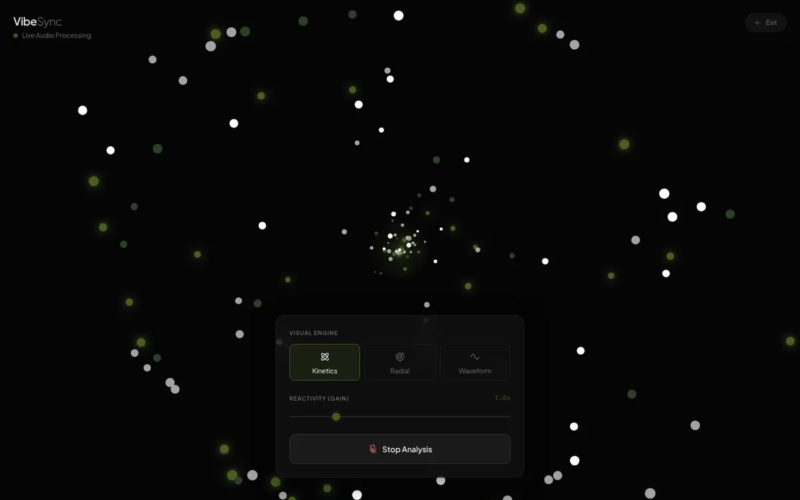
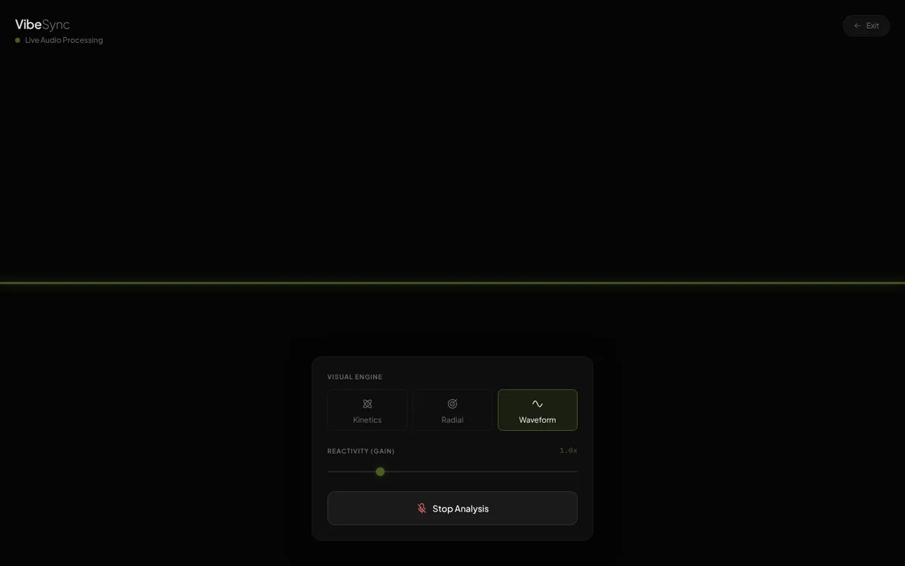

The goal
Make sound visible, with as little interface as possible. The visuals should be the whole experience, and the controls should only be there to shape them.
Key design decisions
1. Earn trust before asking for the mic
Microphone prompts are scary. Before the browser asks, an intro screen explains in one line what the app does and promises that audio stays in your browser and is never recorded or sent. Only then does the "Allow microphone & start" button appear.
2. Three moods, one dial
Kinetics (particles), Radial (a ring of frequency bars) and Waveform (the raw signal) each give the same sound a different character. One reactivity slider covers every mode, because more knobs would mean less looking.


3. Quiet chrome
The controls sit in one small frosted panel at the bottom, and everything else is black. The olive accent marks only the active mode and the slider handle.
What broke, and how it got fixed
While preparing this case study I found that VibeSync crashed on load: the code sized the canvas, which creates the particles, before the particle code existed, so the Start button never worked. Moving a single call fixed it. The lesson: open every project fresh in a clean browser before linking to it.
Working with AI
VibeSync was built with Gemini from my brief on the three modes, the privacy-first intro and the minimal control panel. The load bug was diagnosed and fixed with Claude.
What's next
- A demo mode with a built-in track, so people can see it without a microphone.
- Palette presets that match my other work.
- Full-screen and record-to-GIF.